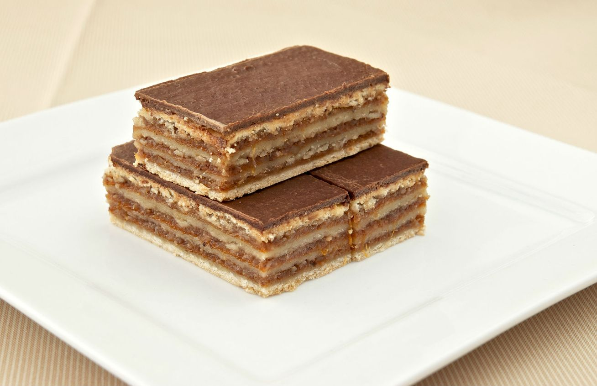

A zserbó egy hagyományos magyar sütemény, amelyet általában ünnepi alkalmakra készítenek. A sütemény rétegezett tésztából áll, amelyet dióval és baracklekvárral töltenek meg, majd csokoládémázzal vonnak be. Az élesztős tészta puha és omlós, míg a töltelék édes és gazdag ízvilágot biztosít. A zserbó elkészítése időigényes, de az eredmény egy ízletes és látványos desszert, amely méltán népszerű Magyarországon.
Zserbó
Hozzávalók
A tésztához
- 1,5 dl tej
- 5 dkg cukor
- 1.5 dkg élesztő
- 50 dkg liszt
- 15 dkg vaj
- 1 csipet só
- 2 db tojássárgája
A töltelékhez
- 25 dkg darált dió
- 20 dkg porcukor
- 2 dkg vaníliás cukor
- 75 dkg baracklekvár
A mázhoz
- 15 dkg cukor
- 10 dkg étcsokoládé
- 1 db tojásfehérje
Elkészítése

- A meglangyosított tejet összekeverjük 1 tk cukorral, majd belemorzsoljuk az élesztőt, és hagyjuk felfutni.
- A lisztben elmorzsoljuk a felkockázott, hideg vajat. Hozzáadjuk a sót, a megmaradt cukrot, a felfuttatott élesztőt, valamint a tojássárgájákat, és alaposan összedolgozzuk az egészet. Az így kapott tésztát három egyenlő részre osztjuk, majd folpakba csomagolva mindegyiket 1 órán keresztül kelesztjük.
- A töltelékhez összekeverjük a darált diót, a porcukrot és a vaníliás cukrot. A lekvárt simára keverjük.
- Lisztezett deszkán kinyújtjuk a megkelt tésztákat kb. 30 × 40 cm-es téglalapokká. Elosztjuk két tésztalapon a lekvárt és a diós tölteléket, egymásra helyezzük őket, ezután befedjük az utolsó lappal.
- A zserbót tepsibe tesszük, és 170 fokra előmelegített sütőben 40-45 percig sütjük. Kivesszük, és hagyjuk kihűlni.
- A csokimázhoz sűrű szirupot főzünk a cukorból és 1 dl forró vízből. A tűzről levéve beleszórjuk a felaprított étcsokoládét, és kevergetve hagyjuk felolvadni. Ha kihűlt, de még folyós, belekeverünk 1/2 tk vizet és a villával felvert tojásfehérjét.
- A mázt a süti tetejére simítjuk, és hagyjuk megszilárdulni. Felszeletelve kínáljuk.